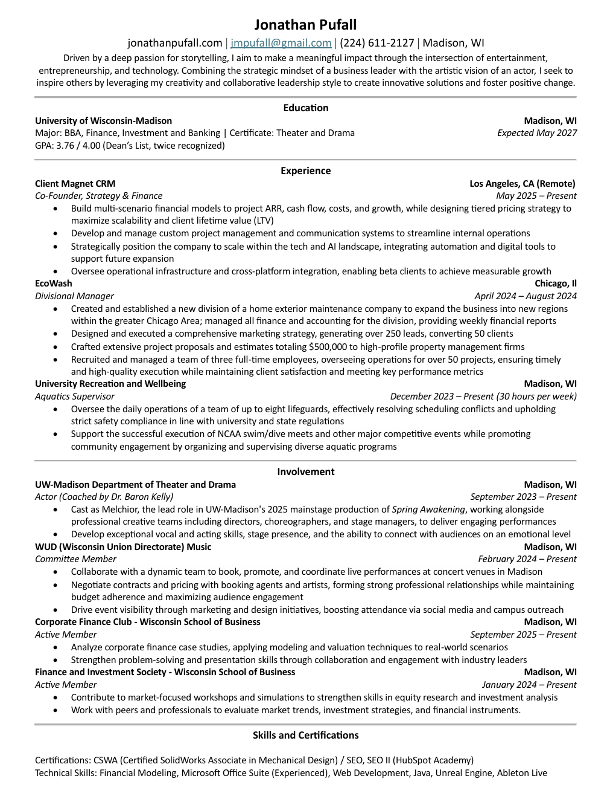

About Me
Originally from Green Bay, Wisconsin, I grew up performing on stage and figuring out how to turn ideas into something real. Today I'm a student at the University of Wisconsin-Madison studying Finance, Investment, and Banking with a Certificate in Theater and Drama.
Driven by a deep passion for storytelling, I strive to make a meaningful impact at the intersection of finance, entertainment, and technology — combining the strategic mindset of a business leader with a creative foundation to democratize entertainment and advance emerging technologies that expand access to how stories are created, experienced, and shared.
My Journey
University of Wisconsin-Madison
Enrolled at UW-Madison pursuing a BBA in Finance, Investment & Banking alongside a Certificate in Theater & Drama.
EcoWash — Divisional Manager
Launched a new regional division in Chicago from scratch. Managed all finance, recruiting, and marketing — generating 250+ leads, converting 50 clients, and crafting $500K in project proposals.
WUD Music Committee
Joined Wisconsin Union Directorate Music, booking and promoting live performances across Madison venues while negotiating artist contracts and driving event marketing.
Lead Role — Spring Awakening
Cast as Melchior in UW-Madison's mainstage production, working alongside professional directors, choreographers, and stage managers.
Co-Founded Client Magnet CRM
Co-founded a SaaS startup focused on CRM solutions. Building financial models projecting ARR and FCF, designing tiered growth strategies, and overseeing operational infrastructure.
Corporate Finance Club
Joined the Wisconsin School of Business Corporate Finance Club — modeling valuation scenarios and DCF analyses for mock M&A cases in media and tech sectors.
What Drives Me
Relationships
The best work comes from real connection. I invest in the people around me because that's what makes everything else possible.
Business Strategy
I like taking an idea from zero to something real. Whether it's a startup or a new division, I want to build things that actually work and grow.
Sustainability
I care about building things that last and doing it responsibly. Long-term thinking matters more to me than short-term wins.
Emerging Technology
AI, immersive media, real-time rendering — I'm drawn to the tools that are reshaping how stories are created and experienced.
Storytelling
Everything I do circles back to this. On stage, in a pitch, or through a product — I want to tell stories that stay with people.
Leadership
I lead by showing up for the people I work with. Building trust and bringing out the best in a team is how real things get done.
Education
University of Wisconsin-Madison
BBA in Finance, Investment, and Banking
Expected May 2027
University of Wisconsin-Madison
Certificate in Theater and Drama
Expected May 2027
Resume
View my professional experience and accomplishments.
 Download Resume